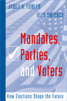

Shows how the size of an election victory influences subsequent candidate behavior, voter behavior, and even the economy
Shows how the size of an election victory influences subsequent candidate behavior, voter behavior, and even the economy


 Shows how the size of an election victory influences subsequent candidate behavior, voter behavior, and even the economy
Shows how the size of an election victory influences subsequent candidate behavior, voter behavior, and even the economy

|  |
Mandates, Parties, and VotersHow Elections Shape the FutureJames H Fowler and Oleg Smirnovpaper EAN: 978-1-59213-595-0 (ISBN: 1592135951) |
"Fowler and Smirnov offer the most comprehensive and penetrating analysis to date of an important and understudied issue: how the size of electoral margins of victory ('mandates') affect the dynamic interaction between parties and voters in elections. All serious students of elections should read their work"
—Gary W. Cox, Distinguished Professor of Political Science, University of California, San Diego
Most research on two-party elections has considered the outcome as a single, dichotomous event: either one or the other party wins. In this groundbreaking book, James Fowler and Oleg Smirnov investigate not just who wins, but by how much, and they marshal compelling evidence that mandates-in the form of margin of victory-matter. Using theoretical models, computer simulation, carefully designed experiments, and empirical data, the authors show that after an election the policy positions of both parties move in the direction preferred by the winning party-and they move even more if the victory is large. In addition, Fowler and Smirnov not only show that the divergence between the policy positions of the parties is greatest when the previous election was close, but also that policy positions are further influenced by electoral volatility and ideological polarization.
This pioneering book will be of particular interest to political scientists, game theoreticians, and other scholars who study voting behavior and its short-term and long-range effects on public policy.
Excerpt available at www.temple.edu/tempress
"Can voters elect politicians to carry voters' wishes into policy? Do social networks affect turnout? Does the margin of victory inform winners and losers about voter preferences? This path-breaking book argues that they do, combining theory and novel computational empirics to take a striking new look at an old but very important question.."
—James Alt,Frank G. Thomson Professor of Government, Harvard University
"No other work on this subject has developed the straightforward models of general applicability introduced by Fowler and Smirnov that relate mandate, policy-motivation, and competition in successive elections to turnout, uncertainty, and a host of control variables, not to mention evaluated such models empirically."
—Samuel Merrill III, Professor Emeritus at Wilkes University and co-author of A Unified Theory of Party Competition
“[The authors] address whether the size of victory in an election matters. Answering in the affirmative, they make their case on theory...[and] show a tendency for strong victories in the US senate races to move parties away from the political center with respect to the selection of future candidates. And armed with experimental results, they strongly assert…that voter turnout and candidate choice are affected not only by a voter’s absolute preference, but also by a voter’s notions of whether a landslide is likely and desirable.”
—Choice
“Using rigorous analytical methods, such as agent-based models and rational choice analysis, and a multitude of data sources, from surveys to market data, [the authors] provide a compelling and valid picture of American government that is rivaled in breadth and empirical consistency by few other explanations….[T]his book [is] an important read for anyone interested in understanding how our political system works.”
—Political Science Quarterly
"In this intriguing book, James Fowler and Oleg Smirnov propose a dynamic model of electoral competition in which 'mandates,' that is, margins of victory, play a central role....This is an impressive study. The authors present an interesting blend of formal theory and inductive reasoning...There is little technical jargon and the presentation is simple and clear. The study is most impressive in its display of an amazing variety of methodological approaches...The message of the book is far from trivial.... In short, this is a thoughtful and provocative book."
—Perspectives on Politics
Contents:
List of Figures
List of Tables
Acknowledgements
Chapter 1. Introduction
Chapter 2. Moving with the Mandate: Policy-Motivated Parties in Dynamic Political Competition
Chapter 3. Dynamic Responsiveness in the U.S. Senate
Chapter 4. Dynamic Parties and Social Turnout
Chapter 5. A Dynamic Calculus of Voting
Chapter 6. Party Responsiveness and Mandate Balancing
Chapter 7. Patience and Turnout
Chapter 8. Markets and Mandates
Chapter 9. Conclusion
Appendices
References
Endnotes
James H. Fowler is Associate Professor of Political Science at University of California, San Diego.
Oleg Smirnov is Assistant Professor of Political Science at University of Miami.
Political Science and Public Policy
Sociology
Social Logic of Politics, edited by Scott D. McClurg.
The Social Logic of Politics Series, edited by Scott D. McClurg (formerly edited by Alan S. Zuckerman), directs attention to several related clusters of research in the social sciences. At the core is a theoretical principle: individuals make political decisions, like other choices, by taking into account cues from other persons. Studies move from individuals to groups to large scale collectivities. Usually examining micro-politics-voting and other forms of political participation; the place of politics in households, the family, the friendship unit, and the neighborhood- this research also studies how broader political and social contexts influence and are influenced by these micro-processes. It includes as well "small group behavior" in political institutions, such as exchanges of cues in legislatures and patron-client relations in bureaucratic agencies and political parties. Books in The Social Logic of Politics Series will apply research techniques that run the gamut of contemporary political science, sociology, communications, and geography.
© 2015 Temple University. All Rights Reserved. This page: http://www.temple.edu/tempress/titles/1891_reg.html.